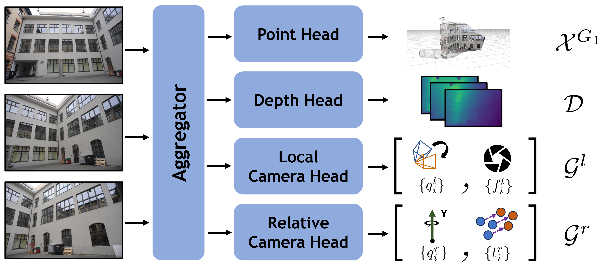

Modern feed-forward 3D reconstruction methods like VGGT predict pixel-aligned pointmaps in camera-centric coordinate frames. However, this choice of coordinate frame is not always optimal.
We propose instead to predict pointmaps in upright, gravity-aligned frames that exploit strong structural cues present in many real-world scenes. Unlike camera-centric frames, gravity-aligned frames share a common vertical axis across viewpoints, reducing the rotational degrees of freedom needed to relate pointmaps to one another.
To this end, we introduce the Gravity Grounded Geometry Transformer (G3T), fine-tuned from existing models on gravity-aligned 3D data. G3T produces highly accurate gravity-aware predictions, including upright pointmaps and camera-to-gravity poses. We further introduce G3T-Long, a submap-based incremental 3D reconstruction pipeline that leverages the reduced rotational degrees of freedom afforded by upright frames to achieve significantly improved reconstruction accuracy.

G3T builds upon VGGT with two key modifications. First, the point head outputs pointmaps in the gravity-aligned frame of the first image (\(\mathcal{X}^{G_1} = \{X^{G_1}_i\}\)). Second, we replace VGGT's camera head with two new heads: the local camera head, whose outputs capture gravity-to-camera rotation and camera intrinsics parameters in \(\mathcal{G}^l = \{G^l_i\}\); and the relative camera head, which capture 1-DoF relative yaw and translation parameters in \(\mathcal{G}^r = \{G^r_i\}\). The aggregator, depth head, and point head architectures are otherwise unchanged from VGGT.
G3T can produce upright pointmaps regardless of the orientation of the reference image, whereas VGGT's pointmaps inherit the roll and pitch of the camera that captured the reference image.
Input Images
Pointmaps predicted by G3T can be related to each other using a pose \(\pi^y(s, R_{y}, t)\) that has 5-DoF (i.e., rotations are restricted to be rotations along the y-axis, which have 1-DoF).
We leverage this property to create G3T-Long, a submap-based reconstruction pipeline that improves upon VGGT-Long and reconstructs long video sequences with significantly improved robustness.
Input Chunk Videos · Click any video to play / pause all
We compare G3T pointmaps against VGGT pointmaps made upright using GeoCalib (with multi-image optimization) as a baseline, alongside ground-truth gravity-aligned pointmaps.
Input Images
Limitations. G3T may not produce good upright-aware predictions in scenes with ambiguous structural cues. For example, G3T can struggle to estimate upright pointmaps from close-up images of floors and walls if additional unambiguous context is not present.
Future work. It would be interesting to explore if gravity-aligned prediction naturally encourages performance improvement in tasks that favor uprightedness, such as physically based simulation or spatial reasoning. Additionally, it could also be advantageous to explore coordinate frames with even more structure, such as Manhattan frames (when appropriate), or even compositions of coordinate frames (e.g., a mixture of an overall scene coordinate frame, as well as local object coordinate frames for items in the scene).
We thank the authors of DUSt3R, VGGT, CUT3R, and VGGT-Long for open-sourcing their projects, which our work builds upon. Additionally, we would like to thank Aditya Chetan, Haian Jin and Jay Karhade for their feedback on initial drafts of the paper. This work was funded in part by the National Science Foundation (IIS-2211259 and IIS-2212084), and benefited from the NVIDIA Academic Grant Program for compute resources.
@article{kani2026g3t,
author = {Nagoor Kani, Bharath Raj and Snavely, Noah},
title = {G3T Up! Gravity Aligned Coordinate Frames Simplify Pointmap Processing},
journal = {arXiv preprint},
year = {2026},
}